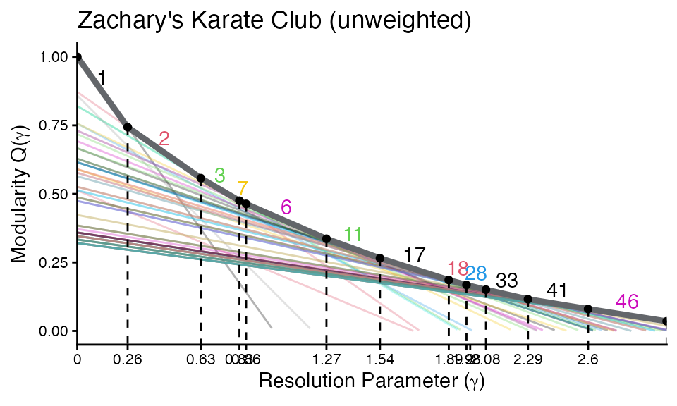
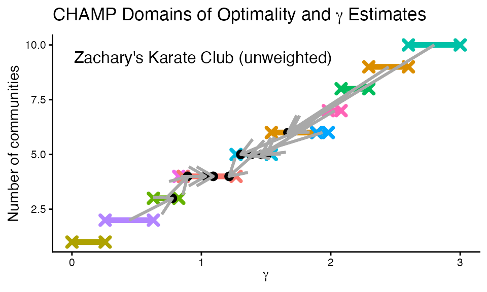

CHAMP_karate.Rmd
library(ideanet)
#> Loading required package: igraphdataThis vignette demonstrates the framework of CHAMP and maps on the CHAMP set to find communities in the karate club network. If you haven’t already done so, you will want to first look at the CHAMP vignette to better understand the commands used here.
These functions, as part of the broader IDEANet project, are supported by the National Science Foundation as part of the Human Networks and Data Science - Infrastructure program (BCS-2024271 and BCS-2140024).
If you use these functions in your work, please cite
In addition to this vignette, we recommend you look at the CHAMP_football vignette, which goes into an even deeper dive on the network of Division I-A college football games from the Fall 2000 season, demonstrating how this pipeline helps uncover the conference structure.
We now re-demonstrate the 3 main steps, this time using the karate
club, available in igraphdata, converted to an unweighted
graph, since it is one of the most popular, classic examples considered
in the community detection literature.
data(karate, package="igraphdata")
karate <- igraph::delete_edge_attr(karate, "weight")
igraph::plot.igraph(karate, main="Zachary's Karate Club")
kc_partitions <- get_partitions(karate, n_runs = 500, seed = 3478)
#> Warning in NA %in% as.numeric(igraph::V(g)$name): NAs introduced by coercion
#> Warning in comm_detect(network, plots = FALSE): Non-numeric IDs detected in the igraph object's `name` attribute. The `name` attribute will be updated to contain zero-indexed ID numbers. The original `name` values will be reassigned to the `original_name` attribute.
#> Warning in igraph::cluster_edge_betweenness(g_undir, weights = igraph::E(g_undir)$r_weight, : Membership vector will be selected based on the highest modularity score.
#> Source: community/edge_betweenness.c:504
#>
#> [1] "77 unique partitions generated between cluster_leiden() and comm_detect()"
kc_partitions <- CHAMP(karate, kc_partitions,
plottitle = "Zachary's Karate Club (unweighted)")
#> [1] "12 partitions in the CHAMP set (i.e., on the upper envelope of Q v. gamma)"
Once again, the plot generated by CHAMP represents each
of the unique partitions returned by get_partitions (in
this example, 77 of them) by a line giving its values of
,
the modularity of the partition as a function of resolution parameter
.
CHAMP then identifies which of these lines ever appear on
the upper envelope of
,
that is, which of the corresponding partitions are somewhere optimal in
the space of
values. In this example, there are 12 somewhere-optimal partitions
found. Again, CHAMP updates the partitions
list (here kc_partitions) with the generated
CHAMPfigure plot shown above and a
CHAMPsummary that provides essential information about the
12 somewhere-optimal partitions found here.
print(kc_partitions$CHAMPsummary)| starting_gamma | ending_gamma | partition_num | num_communities | next_gamma | next_partition_num | next_num_communities | segment_length | gamma_range |
|---|---|---|---|---|---|---|---|---|
| 0.0000000 | 0.2564103 | 1 | 1 | NA | NA | NA | 0.3626189 | 0.2564103 |
| 0.2564103 | 0.6290323 | 2 | 2 | NA | NA | NA | 0.4166041 | 0.3726220 |
| 0.6290323 | 0.8253968 | 3 | 3 | NA | NA | NA | 0.2128651 | 0.1963646 |
| 0.8253968 | 0.8595041 | 7 | 4 | NA | NA | NA | 0.0360337 | 0.0341073 |
| 0.8595041 | 1.2682927 | 6 | 4 | NA | NA | NA | 0.4280991 | 0.4087886 |
| 1.2682927 | 1.5407408 | 11 | 5 | NA | NA | NA | 0.2815362 | 0.2724481 |
| 1.5407408 | 1.8909091 | 17 | 6 | NA | NA | NA | 0.3590888 | 0.3501684 |
| 1.8909091 | 1.9809524 | 18 | 6 | NA | NA | NA | 0.0918271 | 0.0900433 |
| 1.9809524 | 2.0800000 | 28 | 7 | NA | NA | NA | 0.1005383 | 0.0990476 |
| 2.0800000 | 2.2941177 | 33 | 8 | NA | NA | NA | 0.2169029 | 0.2141176 |
| 2.2941177 | 2.6000000 | 41 | 9 | NA | NA | NA | 0.3079728 | 0.3058824 |
| 2.6000000 | 3.0000000 | 46 | 10 | NA | NA | NA | 0.4025090 | 0.4000000 |
The partition that straddles the default
resolution parameter here, which also happens to have a large
gamma_range and segment_length (the length of
the corresponding line segment on the upper envelope of Q v.
in the figure) is the 4-community partition identified as
partition_num 6 here. Having thus highlighted this
partition, we can directly examine it more closely.
kc_partitions$partitions[[6]]
#> IGRAPH clustering leiden, groups: 4, mod: NA
#> + groups:
#> $`1`
#> [1] "Mr Hi" "Actor 2" "Actor 3" "Actor 4" "Actor 8" "Actor 12"
#> [7] "Actor 13" "Actor 14" "Actor 18" "Actor 20" "Actor 22"
#>
#> $`2`
#> [1] "Actor 5" "Actor 6" "Actor 7" "Actor 11" "Actor 17"
#>
#> $`3`
#> [1] "Actor 9" "Actor 10" "Actor 15" "Actor 16" "Actor 19" "Actor 21"
#> [7] "Actor 23" "Actor 27" "Actor 30" "Actor 31" "Actor 33" "John A"
#> + ... omitted several groups/vertices
igraph::membership(kc_partitions$partitions[[6]])
#> Mr Hi Actor 2 Actor 3 Actor 4 Actor 5 Actor 6 Actor 7 Actor 8
#> 1 1 1 1 2 2 2 1
#> Actor 9 Actor 10 Actor 11 Actor 12 Actor 13 Actor 14 Actor 15 Actor 16
#> 3 3 2 1 1 1 3 3
#> Actor 17 Actor 18 Actor 19 Actor 20 Actor 21 Actor 22 Actor 23 Actor 24
#> 2 1 3 1 3 1 3 4
#> Actor 25 Actor 26 Actor 27 Actor 28 Actor 29 Actor 30 Actor 31 Actor 32
#> 4 4 3 4 4 3 3 4
#> Actor 33 John A
#> 3 3
igraph::plot.igraph(karate,mark.groups = kc_partitions$partitions[[6]])
kc_partitions <- get_CHAMP_map(karate, kc_partitions,
plotlabel = "Zachary's Karate Club (unweighted)")
#> [1] "Partition # 6 (with 4 communities) is a fixed point of the iterative map"
The above figure re-visualizes each of the 12 partitions in the CHAMP
set (that is, the somewhere-optimal partitions) as a line segment
indicating the number of communities in the partition (on the vertical
axis) versus its domain of optimality in
(on the horizontal axis). The arrows in the figure visualize the
iterative map on the CHAMP set, directed from the middle of each line
segment to the “estimated
”
associated with that partition and, thus, the partition that is optimal
at that
.
These values are tabulated in the now updated
kc_partitions$CHAMPsummary.
print(kc_partitions$CHAMPsummary)| starting_gamma | ending_gamma | partition_num | num_communities | next_gamma | next_partition_num | next_num_communities | segment_length | gamma_range |
|---|---|---|---|---|---|---|---|---|
| 0.0000000 | 0.2564103 | 1 | 1 | NA | NA | NA | 0.3626189 | 0.2564103 |
| 0.2564103 | 0.6290323 | 2 | 2 | 0.7758161 | 3 | 3 | 0.4166041 | 0.3726220 |
| 0.6290323 | 0.8253968 | 3 | 3 | 0.8935616 | 6 | 4 | 0.2128651 | 0.1963646 |
| 0.8253968 | 0.8595041 | 7 | 4 | 1.0318664 | 6 | 4 | 0.0360337 | 0.0341073 |
| 0.8595041 | 1.2682927 | 6 | 4 | 1.0920129 | 6 | 4 | 0.4280991 | 0.4087886 |
| 1.2682927 | 1.5407408 | 11 | 5 | 1.2143178 | 6 | 4 | 0.2815362 | 0.2724481 |
| 1.5407408 | 1.8909091 | 17 | 6 | 1.3051101 | 11 | 5 | 0.3590888 | 0.3501684 |
| 1.8909091 | 1.9809524 | 18 | 6 | 1.3839833 | 11 | 5 | 0.0918271 | 0.0900433 |
| 1.9809524 | 2.0800000 | 28 | 7 | 1.4646370 | 11 | 5 | 0.1005383 | 0.0990476 |
| 2.0800000 | 2.2941177 | 33 | 8 | 1.5054188 | 11 | 5 | 0.2169029 | 0.2141176 |
| 2.2941177 | 2.6000000 | 41 | 9 | 1.6690753 | 17 | 6 | 0.3079728 | 0.3058824 |
| 2.6000000 | 3.0000000 | 46 | 10 | 1.6881216 | 17 | 6 | 0.4025090 | 0.4000000 |
Looking at the above figure and table, we can see that the only
partition that maps to itself is the 4-community
partition_num 6, as was indicated by the “fixed point”
message output from get_CHAMP_map.
print(kc_partitions$fixedpoints)
#> [[1]]
#> [1] 6Moreover, we note that if we repeatedly follow arrows from any other
partition we eventually reach this same partition. As the only fixed
point of the map on the CHAMP set, partition_num 6 is of
special interest to us here. And, like in the previous example, the fact
that this fixed point also happens to be the same as the optimal
partition at the default resolution parameter
is a special feature of this simple example network (we will see in the
final example below a situation where this default is not a fixed
point).
Importantly, this 4-community partition obtained as a fixed point of
the iterative map on the CHAMP set is not the same as the result in
Newman (2016), which is a 2-community partition because Newman’s
approach takes the number of communities as a specified input, and he
understandably selects 2 communities for this example network because of
its story. We stress that there is no single way to cluster data that is
best in all cases, and that it is important to consider different
possibilities. If one is only interested in solutions with 2
communities, then a modification of the current approach would be to
only consider algorithms that are specified to give 2 communities, or to
only keep the 2-community solutions that come out of
get_partitions. For further discussion of these details,
see Gibson & Mucha (2022).
We could perform the three steps of this framework for the weighted
version of the karate club. Indeed, it is interesting to do so to
emphasize that weights matter and to highlight an important warning
message for the third step of the framework
(get_CHAMP_map).
data(karate,package="igraphdata")
igraph::plot.igraph(karate, main="Zachary's Karate Club (weighted)")
kcw_partitions <- get_partitions(karate, n_runs = 500, seed = 3478)
kcw_partitions <- CHAMP(karate,kcw_partitions,
plottitle="Zachary's Karate Club (weighted)")
kcw_partitions <- get_CHAMP_map(karate,kcw_partitions,
plotlabel="Zachary's Karate Club (weighted)")If you run the above code, you will receive a warning
Warning: The theory underlying get_CHAMP_map() is for unweighted networks. The formulae have been naturally generalized to weighted networks, but these have not been well studied.
CHAMP is fully valid for both weighted and unweighted
networks. But the theoretical equivalence uncovered by Newman (2016) to
define the iterative map used in get_CHAMP_map was
developed for unweighted networks. While the resulting formulae that
define the iterative map have a very natural generalization to weighted
networks, this generalization has not to our knowledge been well
studied, neither theoretically nor in practice. Nevertheless, we expect
that it may still be useful in many situations for highlighting
different partitions. In particular, just as the original definition of
modularity for unweighted networks has a natural generalization to
weighted edges through thinking about discretized multiedges, the
iterative map might possibly have a reasonable multiedge interpretation.
At a minimum, the dimensionless formulae for the “in” and “out”
propensities and for the estimated
value defined in the theory all have natural generalizations computed in
terms of edge weights with strength in place of degree and total edge
weights in place of edge counts. Nevertheless, we again stress that this
has not to our knowledge been well studied, and users are appropriately
warned.
As an aside, we also note that the above code to process the weighted karate network finds two fixed points in the map that are self-consistent in the generalized formulae of the modularity-SBM equivalence (whereas the unweighted version only yielded one fixed point partition).
Girvan, M., and M. E. J. Newman. “Community Structure in Social and Biological Networks.” Proceedings of the National Academy of Sciences of the United States of America 99, no. 12 (June 11, 2002): 7821–26. https://doi.org/10.1073/pnas.122653799.
Gibson, Ryan A., and Peter J. Mucha. 2022. “Finite-State Parameter Space Maps for Pruning Partitions in Modularity-Based Community Detection.” Scientific Reports 12 (1): 15928. https://doi.org/10.1038/s41598-022-20142-6.
Newman, M. E. J. “Equivalence between Modularity Optimization and Maximum Likelihood Methods for Community Detection.” Physical Review E 94, no. 5 (November 22, 2016): 052315. https://doi.org/10.1103/PhysRevE.94.052315.
Pamfil, A. Roxana., Sam D. Howison, Renaud. Lambiotte, and Mason A. Porter. “Relating Modularity Maximization and Stochastic Block Models in Multilayer Networks.” SIAM Journal on Mathematics of Data Science, January 1, 2019, 667–98. https://doi.org/10.1137/18M1231304.
Peel, Leto, Daniel B. Larremore, and Aaron Clauset. 2017. “The Ground Truth about Metadata and Community Detection in Networks.” Science Advances 3 (5): e1602548. https://doi.org/10.1126/sciadv.1602548.
Weir, William H., Scott Emmons, Ryan Gibson, Dane Taylor, and Peter J. Mucha. 2017. “Post-Processing Partitions to Identify Domains of Modularity Optimization.” Algorithms 10 (3): 93. https://doi.org/10.3390/a10030093.